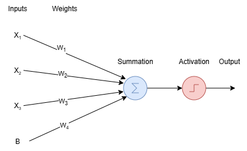
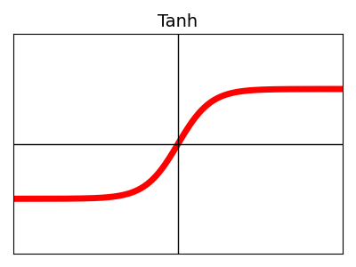
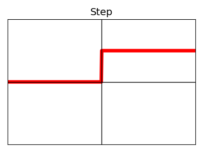

What is a Neural Network?
Neural networks were invented by researchers who aimed to replicate the human brain. In 1943, Warren McCulloch and Walter Pitts published a paper describing a mathematical model of how the brain works. This led to the first notion of an artificial neural network. Their model treated neurons as binary units, meaning they either fire or do not fire. This concept eventually became the foundation for modern (deep) neural networks.
In 1953, the perceptron was created, which is considered the first artificial neural network. A visual representation of the perceptron can be seen below:

Works
The perceptron consists of one layer of inputs and one layer of outputs. Let’s go through the diagram step by step:
- Start at the input layer.
- Each input is multiplied by a weight and then summed together.
- A bias term is added to the summation.
This results in the following equation:
Here:
\( b \) stands for bias and is always added to the summation. The bias allows the network to shift linearly, independent of the input.
Why Activation Functions Are Needed
To fully propagate through the network, an activation function is required. Without it, multiple layers would just perform weighted summations, and the network would fail to approximate complex functions. Activation functions solve this problem by introducing non-linearity. The activation function determines the output of the perceptron. The difference between a perceptron and a neuron is that:
-
A perceptron uses only the step function as its activation.
-
Neurons can use different activation functions.
The formula for one neuron or perceptron is:
Where:
-
\( \mathcal{f} \) is the activation function.
-
\( b \) is the bias.
-
\( n \) is the number of input nodes.
-
\( x_i \) is an input feature.
-
\( w_i \) is the weight for the corresponding input feature.
Activation functions allow non-linear function approximation. The simplest example is a threshold function: if the weighted sum \( z \) is higher than a specific number, the neuron outputs true.
Common Activation Functions
There are many activation functions. The most common ones are shown below:
| Name | Shape | Name | Shape |
|---|---|---|---|
| Sigmoid |  |
ReLU |  |
| Tanh |  | Step |  |
A perceptron is limited to only linear classification. However, it cannot estimate non-linear functions. The reason for this is that it only calculates a linear combination of inputs and applies a single non-linear transformation. It means that the classification is done based upon a linear line, because the input (defined in equation) is a linear summation. Therefore, only one neuron will never be able to estimate non-linear functions. This means classification is based on a linear decision boundary because the input equation is a linear summation. Therefore, a single neuron will never be able to estimate non-linear functions. To approximate non-linear functions, multiple layers of perceptrons (neurons) are required. ``

In this example, there is only one hidden layer, but you can expand the network with as many layers as you like. The hidden layer is simply another set of neurons. After training, these layers can be used for tasks such as classification or regression. Now let’s take a closer look at the diagram. The inputs and their weights are color-coded to make it easier to read. Before we can propagate through this diagram, it is important to understand how to write and refer to the different components. For example, if we want to talk about the weight that connects input neuron 1 to hidden layer neuron 1, we need a consistent notation.
Notation
-
Inputs are noted as \( x_j \), which means input number \( j \).
It is important to note that \( x_0 \) is clamped at 1 because it represents the bias term. -
Weights are noted as \( W_{ij}^{[l]} \), where:
- \( W \) stands for weight.
- It connects neuron \( j \) in layer \( l-1 \) to neuron \( i \) in layer \( l \).
-
The weight \( W_{i0}^{[l]} \) is reserved for the bias in layer \( l \).
-
The activation function for neuron \( j \) in layer \( l \) is noted as \( a_j^{[l]} \).
-
The output of neuron \( j \) in layer \( l \) is noted as \( z_j^{[l]} \).
Again, note that \( z_0 \) is clamped at value 1 because of the bias. -
The final output of the network is noted as \( y_i \).
Forward Propagation
Now that the notation is clear, we can calculate the forward propagation through the network.
For neuron 1 in the hidden layer:
For neuron 2:
For neuron 3:
You might notice the similarity between these equations. A more efficient way to represent them is by using matrix notation, which allows faster computation and is easier for computers to process.
Matrix Representation
The notation can also be expressed in vector form, which is advantageous because computers can perform matrix operations much faster than iterating through loops. The calculation for \(Z^{[l]}\) can be written as:
The \(Z^{[l]}\) values can be found via:
Each row in the weight matrix corresponds to the set of weights for one neuron. The advantage of writing it this way is that it allows for faster calculations. After this multiplication, the activation function should be applied to each neuron in the hidden layer. This process continues through the output layer.
In summary, neural networks are inspired by the human brain and built from simple units called neurons or perceptrons. While a single perceptron can only handle linear classification, stacking multiple layers introduces non-linearity, enabling networks to solve complex problems. Using matrix-based notation and activation functions makes these models computationally efficient and scalable, forming the foundation of modern deep learning.